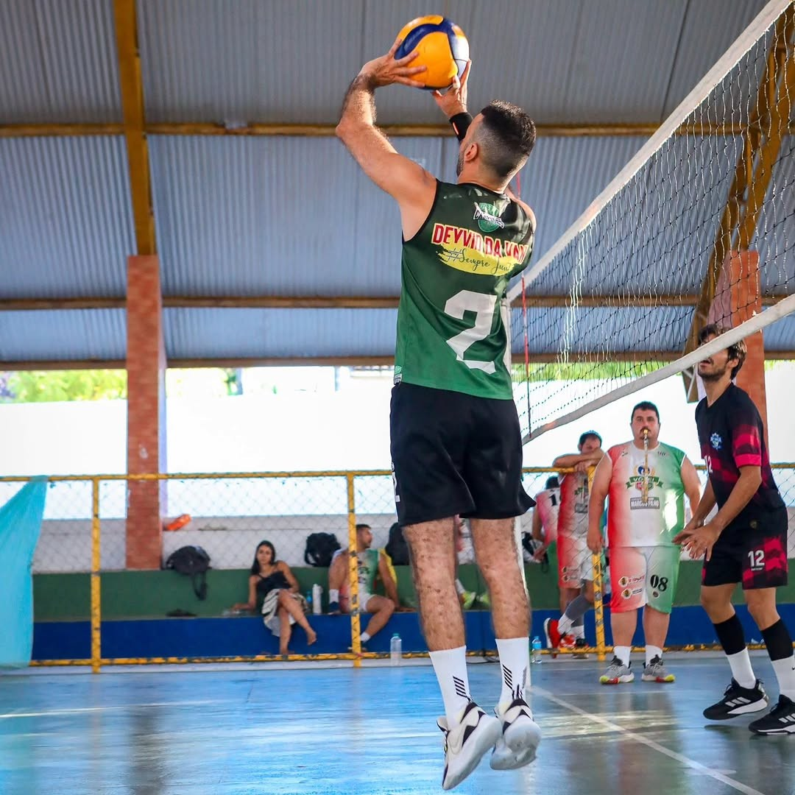

HOJE É DIA DE CELEBRAR
O mundo ganha mais um motivo pra comemorar.
Feliz aniversário, Wal!
Uma homenagem para um cara gente boa, que leva talento pra quadra e uma energia boa por onde passa.

cheio de vitórias.
PRA ALÉM DO PLACAR
Tem gente que marca pontos.
Você marca presença.
EM JOGO
DENTRO E FORA DA QUADRA
Que a próxima temporada da vida seja a melhor de todas.
Disciplina para continuar evoluindo, força para enfrentar os desafios e alegria para aproveitar cada ponto da partida. Que os seus sonhos encontrem espaço para crescer — no esporte e em tudo o que vier pela frente.
Acompanhe o Wal no InstagramUM POUCO DO WAL
Momentos que merecem replay.
Da quadra aos dias de descanso: uma coleção de momentos para celebrar a pessoa especial que você é.
Toque em uma foto para ver em tamanho maior.
CANTINHO DO WAL
Suas ideias.
Suas memórias.
Um espaço só seu para anotar pensamentos, guardar momentos especiais e reunir fotos que você quiser rever depois.
SEU BAÚ DE LEMBRANÇAS
O que você guardou
Seu cantinho está esperando a primeira lembrança.
Escreva uma mensagem ou adicione fotos para começar.Que seja um ano
de grandes jogadas.
Hoje é seu dia, Wal. Aproveite cada segundo — você merece!